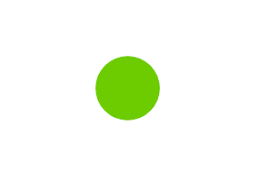

Active Programs
Active Robots
Avg. Time Per Session
Completed Sessions
| Robot Name | Program Name | Status |
|---|---|---|
| UR3 e-series | PicknPlace.script | Online |
| Cobotta | PicknPlace.script | Offline |
| Robot Name | Purchase Date | Original Price | Usage Hours |
|---|---|---|---|
| UR3 e-series | 12/20 | $20,000 | 4,000 hrs |
| UR3 e-series | 5/18 | $20,000 | 4,000 hrs |
| UR5 e-series | 5/18 | $30,000 | 1,090 hrs |
| Fanuc | 7/16 | $50,000 | 50,000 hrs |
| Kuka | 7/16 | $50,000 | 10,000 hrs |